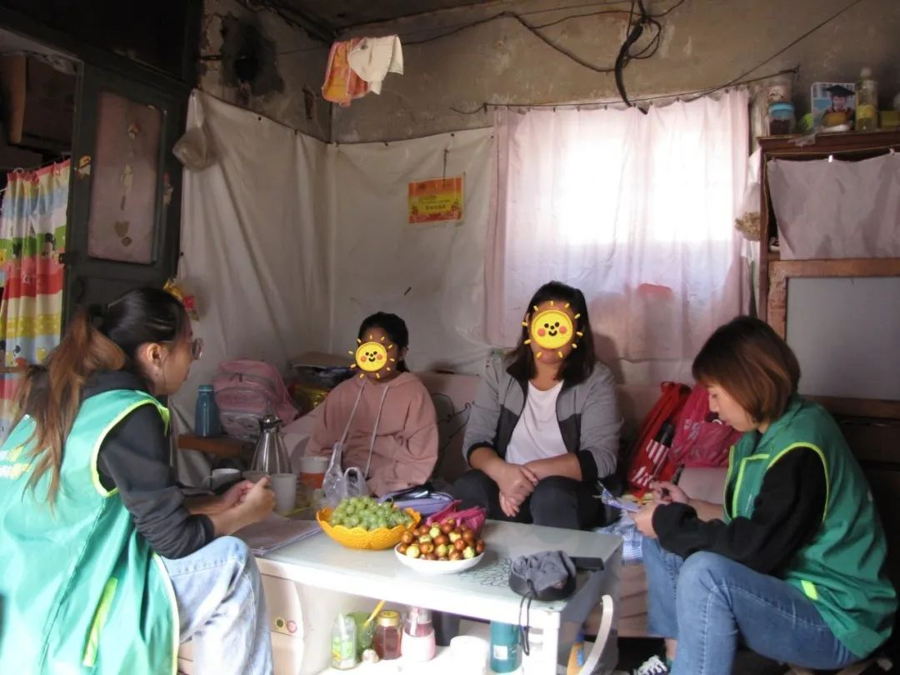
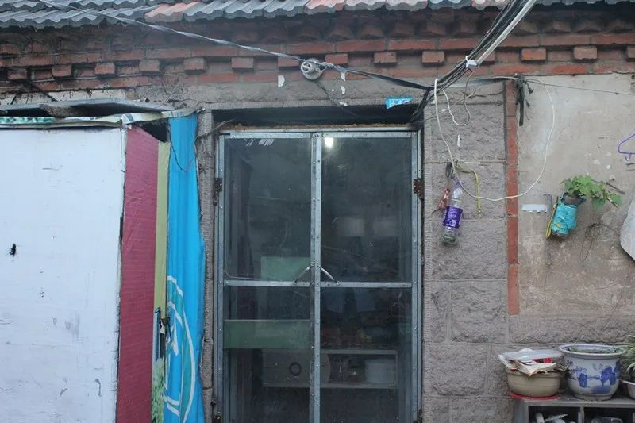

疫情下的深呼吸 | 没有收入，下个月就不知道该怎么生活了
原文链接 备份链接 本文是协作者在“农民工抗疫救援行动”中，针对困境农民工家庭开展的个案访谈之一，旨在快速识别疫情中的脆弱人群及其需求，为疫情防控和救援工作提供参考，我们整理出来与你分享。 疫情下的深呼吸 ——困境农民工家庭个案实录（七） …
本文是协作者在“农民工抗疫救援行动”中，针对困境农民工家庭开展的个案访谈之一，旨在快速识别疫情中的脆弱人群及其需求，为疫情防控和救援工作提供参考，我们整理出来与你分享。
疫情下的深呼吸
——困境农民工家庭个案实录（八）
希望能让孩子有个好一点的未来
口述者：郭玉（化名）山东籍
打工所在地：青岛
编者注：郭玉，44岁，山东籍在青务工人员，没有上过学，一家五口人。郭玉在青岛生活了10年多，目前在青岛崂山区中韩附近居住，自己有头疼的毛病，厉害的时候每天都要吃止痛片，不敢去医院检查。孩子爸爸打零工。虽然不是很富裕，但郭玉认为，孩子们能在城市上学，接受好的教育就很知足。
希望孩子能够接受好的教育
我是在大女儿出生以后，一家人一起来到青岛的，也有10多年了，期间二女儿、三女儿先后在青岛出生。大女儿已经上大学，正在商场实习，二女儿上小学五年级，三女儿上小学一年级。当初选择留在城市的原因是因为自己没有上过学，城市里的学校条件好，希望自己的孩子能够接受好的教育，有个好一点的未来。

▲ 协作者社会工作者了解家里的生活状况（拍摄于2019年10月）
孩子爸爸的身体还行，我自己有头疼的毛病，厉害了吃上药后就会好点。自己因为害怕上医院检查出其他的毛病，所以头疼了就去药店拿止疼药，18元1盒的大约是20粒，头疼厉害的时候就吃上。
没有签合同也没有社会保险
我因为没上过学，不认识字，换过的工作也挺多。去年朋友给介绍的给婴幼儿洗澡的工作，每月工资大约是2800元，一直做到现在，但没有签合同也没有社会保险。孩子爸爸打零工，收入也不固定，好的时候一个月6000多元，也没有给自己投社会保险。我们夫妻只有在老家村里上的新农合，至于其他的商业保险，自己也了解了一点，但是没有能力去购买。包括孩子们，也只有学校的学平险以及老家的新农合，其他商业险也没有。
商场里人越来越少，才感觉到疫情的严重
我家里有个旧面包车，一般过年都是正月初二开着车回去，因为疫情的原因，今年也没回家过年。我们大约是在1月20日知道这个疫情，不过当天感觉家长给孩子来洗澡还比较多，也没在意。等到了1月21日，突然感觉商场人一下子少了，1月22日整个商场人更少，几乎没有人，才感觉到这个疫情的严重性。我在手机上关注了疫情的新闻，虽然不认字，但是感觉这个很重要，会经常性的看手机上疫情的进展情况。
只要能让孩子吃饱喝饱，心里就踏实
现在我居住的村已经封村了，村里没有相关的疫情宣传，没有测量体温，也没有发口罩的，村里四周都是用铁皮围起来了，只让出不让进。1月27日（正月初三）的时候还可以进出登记，现在是有身份证都不让进。我们现在只能在家不出门，少跟外面的人接触。让孩子们多吃饭、多喝水、勤洗手，出门一定要戴口罩。

▲ 郭玉家的出租屋（拍摄于2019年5月）
我当年也经历过非典，那时已经在青岛了，目前的情况跟非典时差不多，也是有些紧张，但不是很厉害。唯一不同的是非典时只要有证件都可以正常出入居住的地方，现在这个疫情是不让出入，感觉是把人困在家里，有些不适应。
我自己感觉这个疫情怎么也要持续1-2个月，对生活影响感觉会很大，目前家里的米面剩余的不多，吃个三五天还没有问题。村里的市场也是关门，不敢出去，村里只让出不让进，担心出去以后进不来怎么办。往年正常情况下，外地人都走了，村里的市场购买生活用品也是个难题。
过去十几天，现在终于好一点了，村里有一个可以买菜的地方。家里的温饱基本能解决，但是最担心的还是经济来源，目前没有任何的收入，就靠着过年没回家的钱过日子，实在不行就需要跟自己的姐姐借一点，大人还好说不能让孩子跟着遭罪。希望疫情赶紧过去，自己也好去上班挣钱。
假如这个疫情持续3个月或是6个月，我希望在生活上得到支持和帮助，只要能让孩子吃饱喝饱，心里就踏实，就不那么紧张了。
社会工作者手记
不识字的郭玉，在外务工的时间里，经历过非典，现在再次经历新冠肺炎疫情，所以，在今天的通话中，感觉她对疫情没有太多恐惧，更加关心对生活的影响，尤其孩子的生活。百姓的安稳来自于衣食住行的顺畅，面对严厉的疫情防控，郭玉还是心怀希望，虽然自己一天学没有上过，但她知道教育的重要性，所以，就算生活再艰难，她还是希望孩子可以无恙！
服务建议
当下：
1.普及新型冠状病毒防疫知识；
2.提供基本救援物资，口罩以及消毒用品；
3.了跟进村里封村的情况，必要时协助购买生活物品。
长远：
1.普及社会保障和劳动合同法相关知识；
2.提供就业辅导，拓展就业选择空间；
3..继续提供助学救助。
（更多个案故事与个案报告见微信公众号“协作者云社工”，转载请在公众号后台留言与协作者联系。）


感谢每一位协作者之友。在这个非常时期，即使人与人之间必须要保持距离，总还有生命的希望和力量迸发在我们心间。谢谢有你们！
支持协作者，
你可以加入协作者之友，成为协作者月捐人

查阅往期链接，了解更多协作者抗击疫情信息：
疫情下的深呼吸|新冠肺炎疫情中困境农民工家庭需求分析报告（摘要）
协作者致打工朋友的一封信（二）| 疫情期间，如何面对返城务工

协作者云社工

长按二维码，识别关注协作者云社工
说明：“协作者云社工”微信公众号发布内容，除特别说明外，均为原创，使用文中内容请注明出处及作者，否则将追究相关责任。
原文链接 备份链接 本文是协作者在“农民工抗疫救援行动”中，针对困境农民工家庭开展的个案访谈之一，旨在快速识别疫情中的脆弱人群及其需求，为疫情防控和救援工作提供参考，我们整理出来与你分享。 疫情下的深呼吸 ——困境农民工家庭个案实录（七） …
原文链接 备份链接 本文是协作者在“农民工抗疫救援行动”中，针对困境农民工家庭开展的个案访谈之一，旨在快速识别疫情中的脆弱人群及其需求，为疫情防控和救援工作提供参考，我们整理出来与你分享。 疫情下的深呼吸 ——困境农民工家庭个案实录（六） …
原文链接 备份链接 本文是协作者在“农民工抗疫救援行动”中，针对困境农民工家庭开展的个案访谈之一，旨在快速识别疫情中的脆弱人群及其需求，为疫情防控和救援工作提供参考，我们整理出来与你分享。 疫情下的深呼吸 ——困境农民工家庭个案实录（九） …
原文链接 备份链接 本文是协作者在“农民工抗疫救援行动”中，针对困境农民工家庭开展的个案访谈之一，旨在快速识别疫情中的脆弱人群及其需求，为疫情防控和救援工作提供参考，我们整理出来与你分享。 疫情下的深呼吸 ——困境农民工家庭个案实录（五） …
原文链接 备份链接 “ - 疫 情 之 下 - 如果没有按下全国的紧急暂停键，所有居民足不出户，所有像老陈这样的物业人员全力守护的最后一公里，也没有现在渐近的明朗和希望。 ” 1 大年30那天中午，重庆渝北某小区的物业管家老陈在家和家人 …